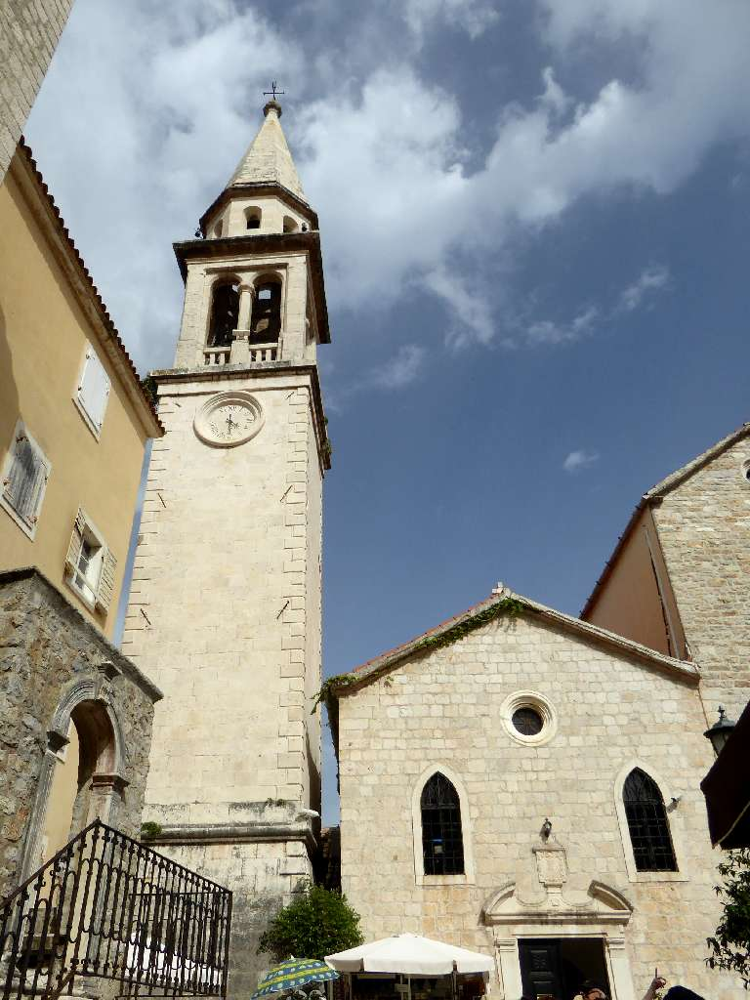
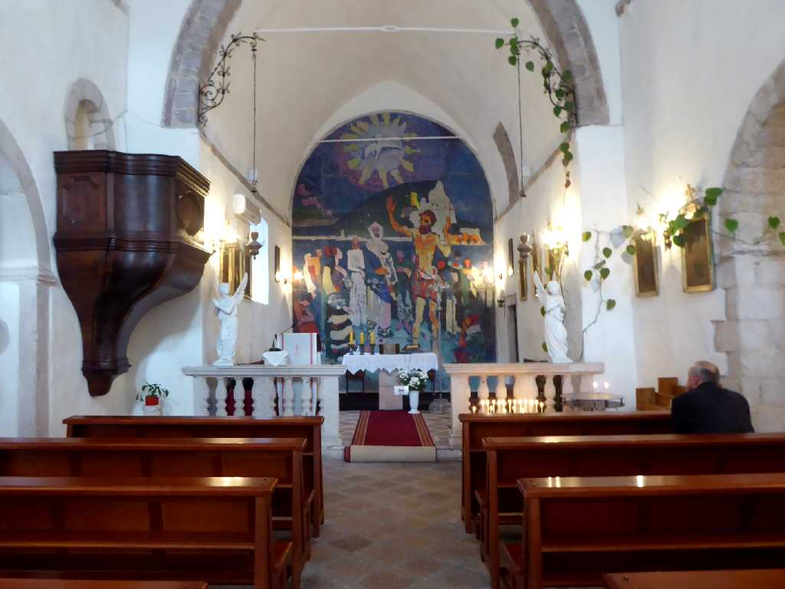
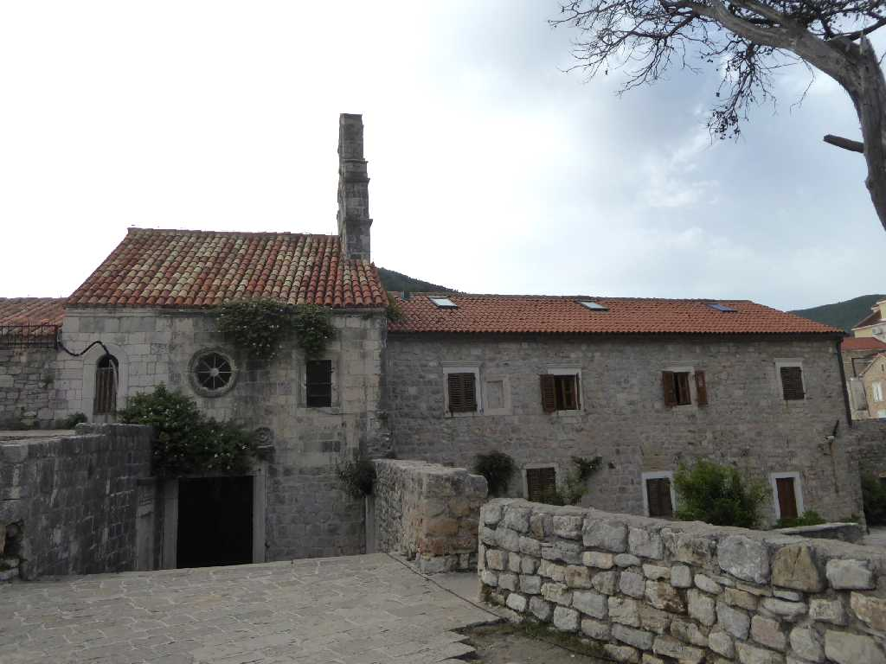
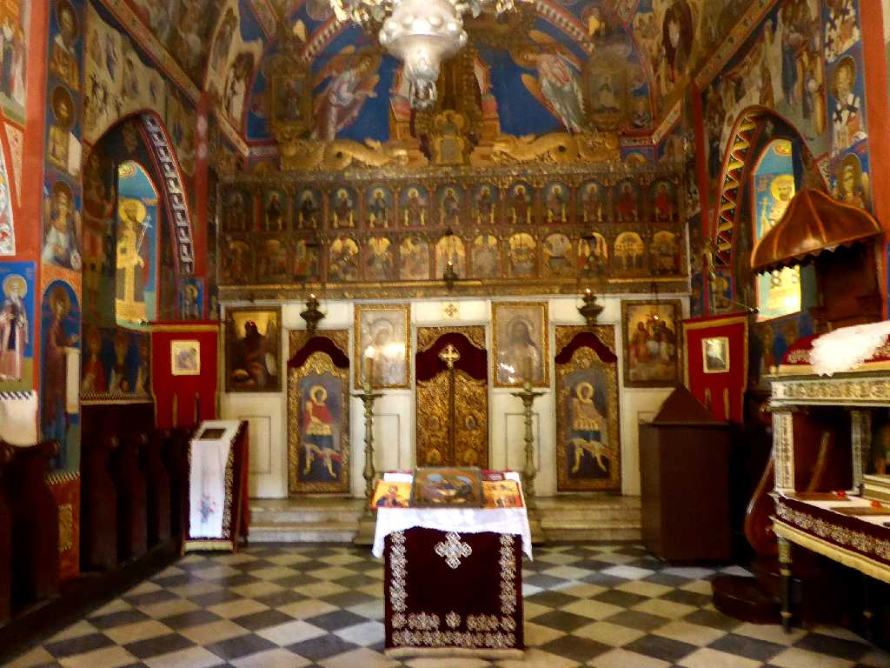
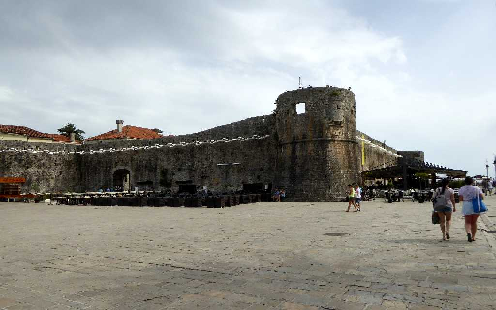
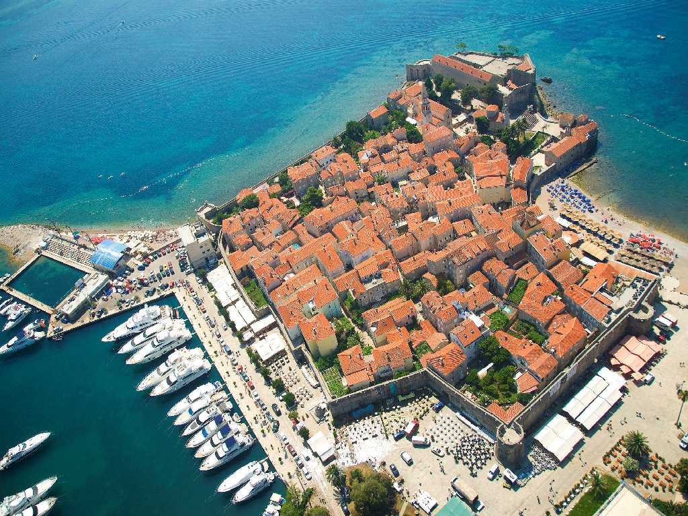
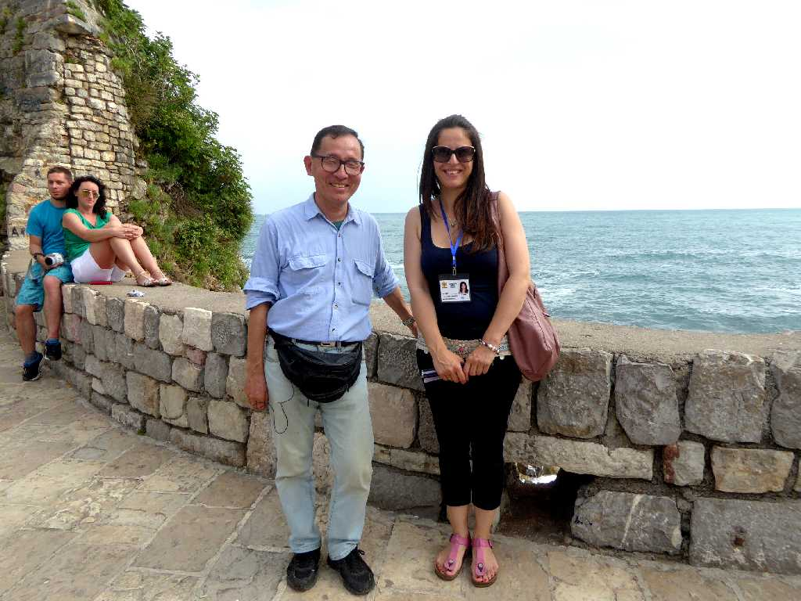

St. Ivan Church Budva
７世紀に創られた聖イヴァン教会

Altar St. Ivan Church

St. Maria Church Budva
８４０年に創られた聖マリア教会

Altar St. Maria Church

Wall Budva
ブドヴァは紀元前５世紀に定住が始まったアドリア海地域最古の都市と考えられている

Budva

June 17 2016 Budva